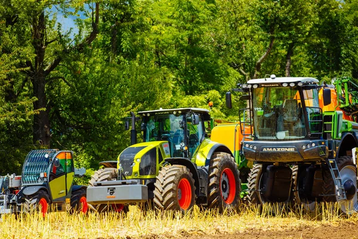
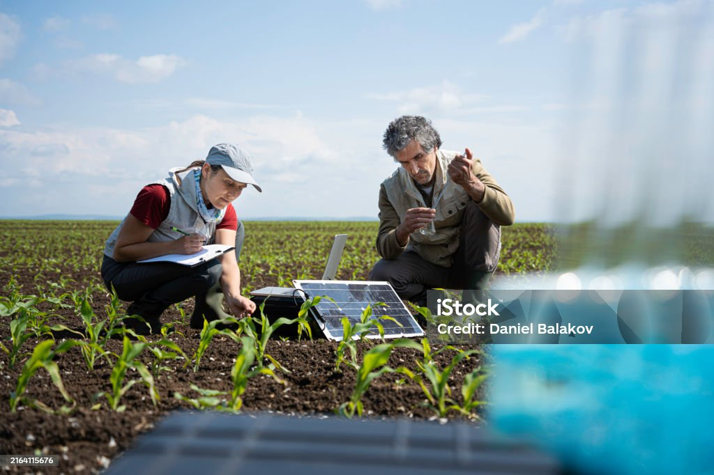
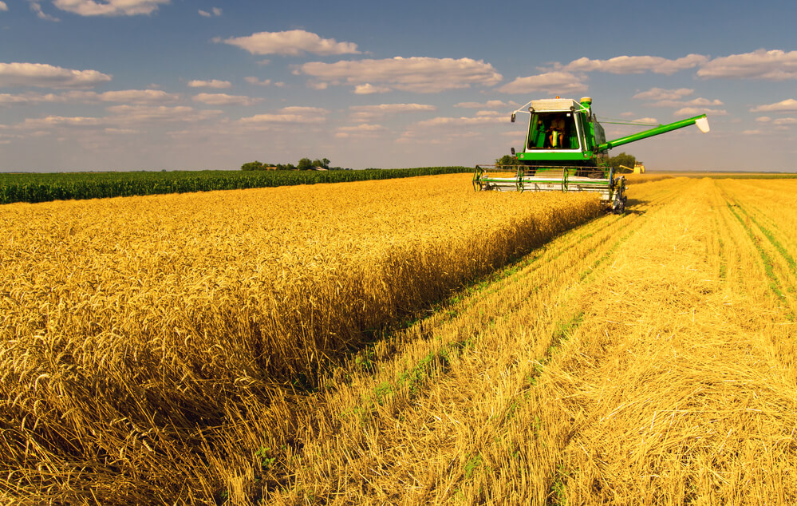
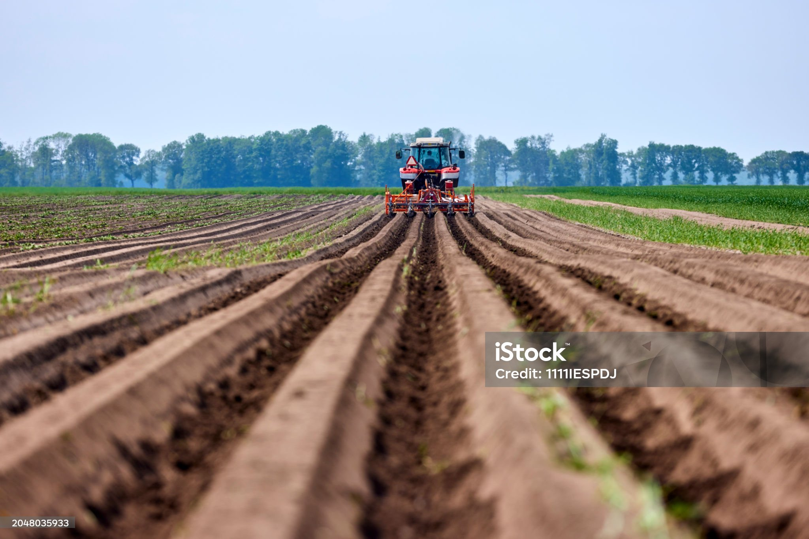

Ласкаво просимо до AgroFleet!


Наші Послуги


Долучайтесь до AgroFleet сьогодні!
AgroFleet допоможе вам залишатися на крок попереду конкурентів, знижуючи витрати та забезпечуючи стабільний ріст вашого бізнесу. Приєднуйтеся до нашої спільноти інноваційних аграріїв і відкрийте для себе нові можливості ефективного управління технікою. Разом ми зможемо змінити майбутнє аграрного сектора.